2 정보의 표현과 처리
컴퓨터가 실제로 해석하는 비트들과 연산들이 무엇이 있는지 배운다.
- 컴퓨터는 두 개의 값을 갖는 신호로 정보를 처리한다.
- 이러한 비트를 이진수 체계를 사용해서 양수들로 인코딩하여 사용한다.
- 비부호형
- 부호형(2의 보수)
- 부동소수점
정보의 저장
- 2진수: 컴퓨터의 비트 표현
- 16진수: 비트 패턴을 표시하는데 사용됨(2진수와 10진수는 불편함)
- 비트 표시 방법(xw-1,xw-2,…,x1,x0)
- 리틀 엔디안: 가장 덜 중요한 바이트가 먼저 온다.(x0,x1…)
- 빅 엔디안: 가장 중요한 바이트가 먼저 온다.(xw-1,xw-2…)
- 비트 수준 연산
- 부울 대수:
~(not),&(and),|(or),^(exclusive-or) - 쉬프트
- 좌측 쉬프트: « 우측에는 k개의 0 채워짐
- 논리 우측 쉬프트 » 좌측에는 k개의 0 채워짐
- 산술 우측 쉬프트 » 좌측에는 k개의 중요한 비트들이 채워짐
- 부울 대수:
정수의 표시
비부호형과 부호형(2의보수)의 표현 방법에 차이점에 포인트를 두어야 한다.
- 부호형(2의 보수) : 맨 앞자리의 비트가 0이면 양수, 1이면 음수로 표현한다.
- ex) 1101 -> 앞자리가 1이므로 -8, 앞자리를 제외한 값이 5 -> -8+5=-3 이렇게 계산한다.
- 비부호형과 부호형 간의 변환과 확장, 절삭에서 부호형의 오버플로우가 발생한다.
정수의 계산
- 부호형의 덧셈, 곱셈에서 음의 오버플로우와 양의 오버플로우가 발생한다.
- 쉬프트를 사용해서 곱셈이 가능하다.(비용이 훨씬 적게 듬)
- ex) 11(1011[2])*4 = 44(101100[2])
부동소수점
- 부동소수점 V = x*2^y 형태로 인코딩한다. y는 1/2, 1/4… 와 같은 값
- 근사법 rounding
- 부동소수점은 정확한 값을 얻을 수 없다. 그렇기 때문에 근사 연산을 한다.
- 짝수근사법, 영방향근사, 하향근사, 상향근사 모드가 있다.
- 부동소수점은 정확한 값을 얻을 수 없다. 그렇기 때문에 근사 연산을 한다.
3 프로그램의 기계수준 표현
우리가 코드를 작성하면 컴파일러는 소스파일의 어셈블러 버전을 생성한다. 어셈블러는 해당 어셈블리 코드를 바이너리 목적코드로 변환한다. 이후 목적코드를 컴퓨터가 해석한다. 이번 챕터에서는 어셈블리 코드에 대해 배운다. 이것을 배우게 되면 컴파일러의 최적화 방법을 알 수 있고 코드의 비효율성을 분석할 수 있게된다.
프로그램의 인코딩
- 프로그램 호출방법(c언어 기)
- C 전처리가 #include와 #define을 확장해준다.
- 컴파일러는 소스파일의 어셈블리 코드를 생성한다.(test.c -> test.s)
- 어셈블러는 어셈블리 코드를 바이너리 목적코드로 변환한다.(test.s -> test.o)
- 링커가 목적코드를 라이브러리 함수와 함꼐 최종 실행 파일인 test.p를 생성한다.
- ISA(Instruction Set Architecture): 인스트럭션 집합구조, 프로세서의 상태 및 인스트럭션 형식과 영향을 정의한다.
- 인스트럭션 특성 요약
- 오퍼랜드: 데이터와 목적지 위치를 명시한다.
- 레지스터나 메모리로부터 읽고 저장한다.
- immediate(상수값), register, memory 세가지 타입이 존재한다.
인스트럭션 종류
- 데이터 이동: mov
- 두 개의 오퍼랜드 모두 메모리 위치에 올 수 없다.
- 스택의 저장과 추출: push, pop
- 산술연산: add, sub, imul, idiv, sal(left shift), inc(++1), or, and…
- 유효주소 적재: leaq
- 포인터 생성하기 위한 인스트럭션
조건코드: CF(carry flag), ZF(zero flag), SF(sign flag), OF(overflow flag)- cf: 중요한 비트로부터 받아올림이 발생한 것을 표시(오버플로우 검출)
- 제어문: cmp, test, set
- cmp는 두 오퍼랜드가 같으면 zf를 1로 설정
- test는 조건 코드만 설정
- set은 비교후 조건코드를 설정해줌
- 점프: jmp, je, jle…
- 조건부 이동: cmove, cmovg…
- 콜 리턴: call, ret
조건부 분기(if else)
- 조건제어: cmp와 jump를 사용함
- 조건부이동: cmove등을 사용함(더 빠름)
- 경우를 다 계산하고 이동만함
반복문(for, while)
- cmp와 jump를 사용
프로시저
- call: call하게 되면 이전 주소와 함께 스택 메모리에 올라감
- return: 후입선출 구조이기 때문에 스택에 있던 이전 주소가 pop되며 retrun 하게됨
- 데이터 전송: 인자는 레지스터로 전송되지만, 6개 이상의 인자를 가지면 초과되는 인자는 스택으로 전달된다.
- 지역 변수: 지역변수 또한 스택 프레임 내에서 생성된다.
- 레지스터: 레지스터는 프로시저 모두가 굥유함. 기존에 사용하던 레지스터를 새로 호출한 함수에서 “saved registers”라는 스택의 일부분을 할당해서 저장하고 보존한다.
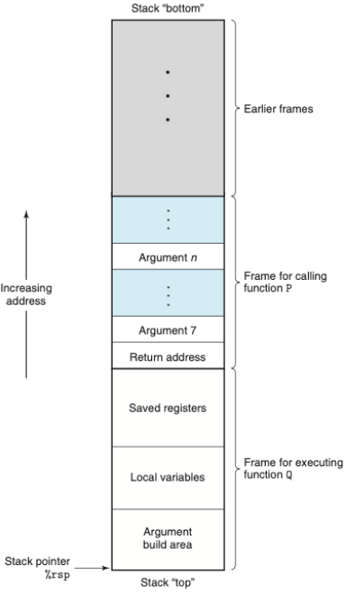
데이터의 정렬
- 사용 가능한 주소를 k의 배수가 되도록 요구한다.
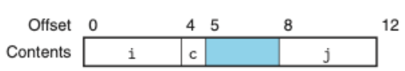
버퍼 오버플로우
- 스택의 saved registers와 return address 범위를 침범하면 심각한 오류를 발생시킨다.
- 대응 방법
- 스택 랜덤화: 스택의 위치를 프로그램 실행마다 다르게 해준다.
- 스택 손상 검출: 스택에 canary값을 추가하여 손상되는 것을 감지한다.
- 실행코드 영역 제한
부동소수점
- 정수 연산과 유사하다.
- 부동소수점을 위한 레지스터를 따로 사용한다.
4 프로세서 구조
하드웨어 시스템이 ISA의 인스트럭션들을 어떻게 실행할 수 있는지를 학습한다. ISA인 “Y86-64”를 직접 만들어보며 학습한다. 이후 SEQ를 기초로 파이프라인형 프로세서 PIPE를 만들어본다. 프로세서는 각 인스트럭션의 실행단계를 5단계로 나누어 처리한다.
- 프로그래머-가시성 상태(programmer-visible state) : 프로그램 레지스터, CC(조건코드), PC, 메모리, Stat(상태코드)를 포함한다.
인스트럭션 집합(Y86-64)
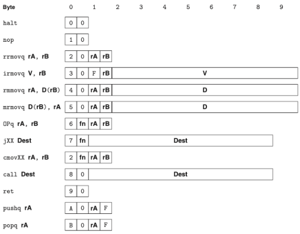
- 위의 그림처럼 인스트럭션이 인코딩된다.
- 인코딩에 1에서 10바이트가 소요된다.
- OPq는 정수연산이며 ZF,SF,OF 조건코드를 결정한다.
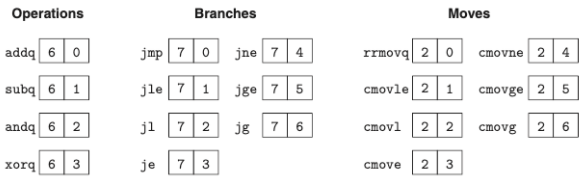
- 위의 그림처럼 인스트럭션에 대한 상세한 특정 인코딩으로 변환된다.
예외상황(Y86-64)
- Stat(상태코드)를 나타낸다.
- AOK: 정상 실행
- HLT: halt 인스트럭션 실행(정지 인스트럭션)
- ADR: 잘못된 메모리 주소를 읽거나 쓸 때
- INS: 잘못된 인스트럭션을 만났을 때
어셈블러를 사용해 어셈블한 결과 == 목적코드
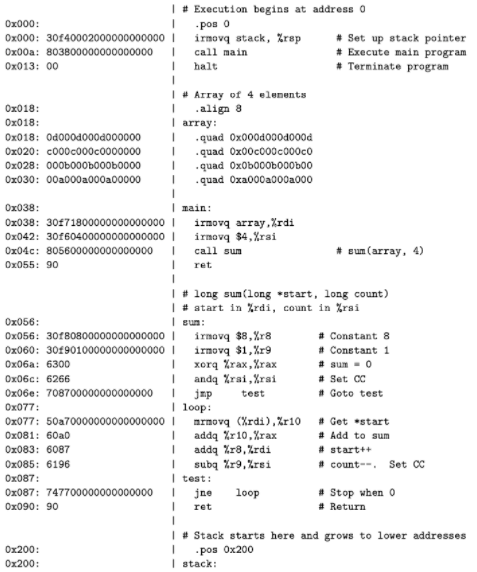
SEQ 설계 1 (레지스터 파일)
SEQ는 sequential 프로세서를 의미한다. SEQ를 설계하기 위해서는 SEQ 내에 있는 레지스터 파일을 이해해야 한다. 레지스터 파일을 이해하기 위해서는 논리게이트와 클럭을 이해해야한다.(레지스터 파일이 논리게이트로 이루어져있다.)
논리게이트 -> 조합회로 -> (레지스터 연산 = 클럭) -> 레지스터 파일 -> SEQ -> SEQ+ -> PIPE
- 논리게이트: AND, OR, NOT등의 입력들의 불 함수 출력을 만들어낸다.
- 출력과 입력은 0과 1이다.
- 조합회로: 여러 논리 게이트를 모아 네트워크를 만들어 계산 블록을 만든다.다
- 클럭: 주기적 신호인 한 개의 클럭에 의해 새 값들이 제어된다.
- 클럭을 사용하는 레지스터: 워드나 개별 비트 저장
- RAM: 주소를 사용해서 여러 워드를 저장
- 레지스터 연산: 클럭이 상승할 때 레지스터의 입력값이 새값을 가진다.
- 레지스터 파일:
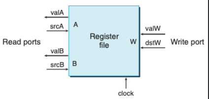
SEQ 설계 2 (하드웨어 구조)
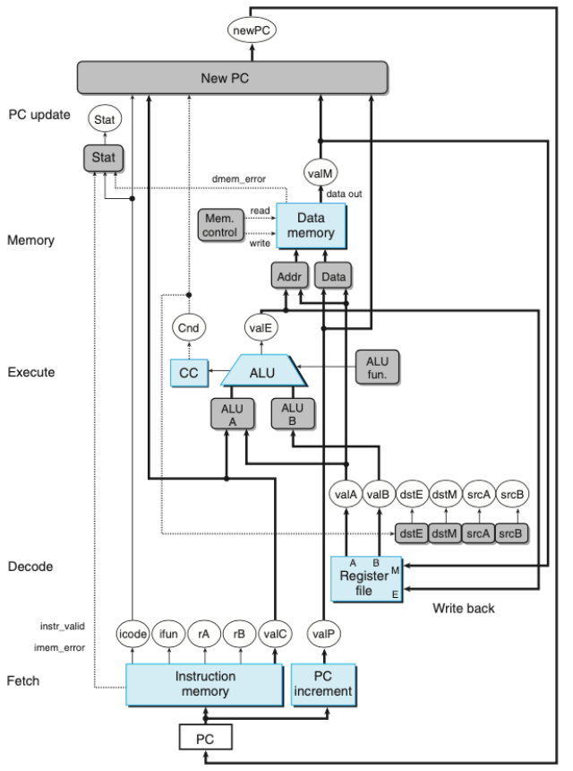
-
위의 그림은 SEQ 하드웨어 구조다.
- 작업 단계
- 선입 fetch: PC를 메모리주소로 사용해 인스트럭션 바이트를 읽어들인다.
- 해독 decode: 레지스터 파일에서 오퍼랜드를 읽어서 valA, valB를 얻는다.
- 실행 excution: ALU(산술/논리 연산)이 인스트럭션이 지시하는 연산을 수행하거나 유효주소 계산 및 스택 포인터 값 변경한다. 조건 코드 및 점프 인스트럭션도 갱신한다. valE
- 메모리 memory: 데이터를 메모리에서 쓰거나 읽어온다. valM
- 재기록 write back: 두 결과를 레지스터 파일에 기록한다.
- PC 갱신 PC update: PC는 다음 인스트럭션의 주소로 설정된다.
- SEQ 타이밍
- 메모리와 레지스터에 클럭을 공급하며 프로세서의 여러 동작들을 순서대로 제어한다.
- 인스트럭션에 의해 갱신된 상태를 다시 읽을 필요는 없다.
파이프라이닝 원리
SEQ에서는 하나의 인스트럭션을 처리하는데 3~5 클럭정도 소요된다. 하지만, 다양한 단계에서 하나의 인스트럭션이 끝날 때 까지 쉬고 있는 단계가 많다. 이를 사용하기 위해 파이프라이닝 개념을 도입하였다.
- 파이프라이닝 주요 특징 : 시스템 처리량, 지연시간을 증가 시킨다.
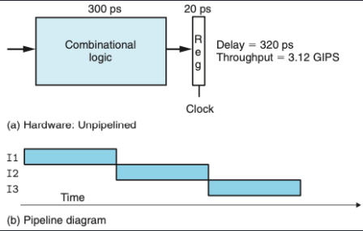
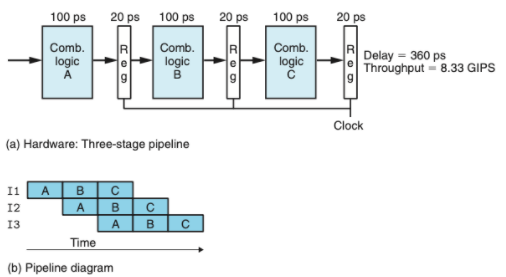
- 위의 그림은 비파이프라인과 파이프라인
- 수행 시간을 계산하면 파이프라인이 약 2.5배 빠르지만, 지연시간은 40ps정도 늘어났다.
파이프라이닝의 한계
- 각 단계별로 처리 시간이 다르면, 가장 늦은 단계의 시간지연 값에 의해 클럭의 속도가 결정된다.
- 인스트럭션들 간에 데이터 의존성이 존재하면 파이프라이닝이 제한된다.
- 피드백을 갖는 파이프라인 시스템이라고도 한다.
PIPE 설계
SEQ 구조에서 PC갱신 단계를 맨 처음으로 바꾼 SEQ+를 설계한 후 파이프라인을 적용하여 PIPE구조를 설계한다.
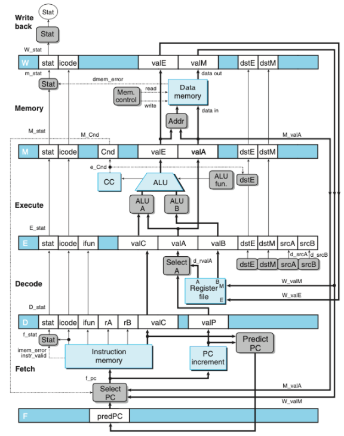
- 위의 그림은 PIPE-의 하드웨어 구조이다.
다음 PC값의 추정
- 파이프라인 설계의 목표는 매 클럭 사이클마다 새로운 인스트럭션을 실행하는 것이다.
- 목표를 달성하기 위해서 PC의 새로운 값을 예측해야 한다.
- 조건제어나 분기등으로 인해서
- 분기 방향을 추측하는 기술을 branch prediction이라고 한다.
파이프라인 해저드
- 피드백이 있는 시스템에 파이프라인을 도입하면 인스트럭션들 간에 의존성으로 인해 문제가 발생한다.
- 데이터 의존성: 현재의 계산의 결과가 다음 인스트럭션을 위한 데이터로 사용되는 경우
- 제어 의존성: jump, call, ret과 같은 인스트럭션을 처리할 경우
- 해저드: 의존성들이 파이프라인으로 인해 잘못된 계산을 하는 것
스톨을 사용한 데이터 해저드 회피
- 해저드 조건이 사라질 때 까지 파이프 라인 내에 유지한다.
- 스톨링동안 실행 단계에 버블을 삽입한다.
- 버블은 동적으로 생성된 nop인스트럭션과 비슷하다.
포워딩을 이용한 데이터 해저드 회피
- 소스 오퍼랜드로 이전에 실행된 인스트럭션 결과 값을 전달할 수 있다.
- “Sel+Fwd A”와 “Fwd B” 두 블록으로 피드백 된다.
로드/사용 데이터 해저드 회피
- 메모리 읽기가 파이프라인의 뒷부분에서 일어나기 때문에 포워딩으로 처리할 수 없다.
- 스톨링과 포워딩을 함께 사용한다.
- load interlock: 로드/사용 해저드를 처리하기 위해 스톨을 사용하는 것
제어 해저드의 회피
- ret: 스톨을 사용한다.
- jump: 분기할 것을 예측한다. -> 잘못 예측된 것을 확인한다. -> 버블을 삽입하여 인스트럭션을 취소한다. -> 점프 다음에 오는 인스트럭션을 선입한다.
- instruction squashing: 잘못 선입한 인스트럭션을 취소하는 것
파이프라인 예외처리
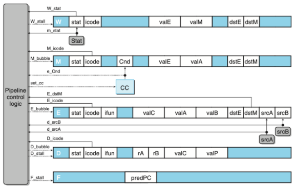
- 제어로직을 사용하여 예외처리를한다.
5 프로그램 성능 최적화하기
- 상위 수준 설계: 적절한 알고리즘과 자료구조 선택
- 최적화 장애물 피하기
- 함수 호출제거
- 계산은 루프 밖으로 이동
- 불필요한 메모리 참조 제거
- 중간 값을 저장하는 임시 변수 사용(데이터 의존성 피하기)
- 최종 값이 계산되었을 때에만 전역변수나 배열에 결과 저장(load 의존성 피하기)
- 하위수준 최적화: 병렬성 이용
- 루프풀기
- 다중누산기와 재결합 기법 사용
- statement 보다 expression 사용하기
6 메모리 계층구조
- 랜덤-접근 메모리(RAM)
- SRAM: 캐시메모리로 사용
- 메모리셀에 저장한다.
- 지속성을 갖는다.
- 리프레시가 필요없다.
- DRAM: 메인메모리로 사용
- 캐패시터에 저장한다.
- 리프레시가 필요하다.
- 메모리 컨트롤러는 행 주소 -> 열 주소를 보낸다.
- RAM은 전원이 꺼지면 정보도 잃어버리기 때문에 휘발성이다.
- SRAM: 캐시메모리로 사용
- 비휘발성 메모리
- 전원이 꺼져도 정보를 유지한다.
- Read-only memory ROM이라고 부른다.
- 버스
- 프로세서와 메인메모리간에 데이터를 교환한다.
- 버스 트랜잭션이라고 부르는 일련의 단계들을 통해 이뤄진다.
- 읽기와 쓰기 트랜잭션이 있다.
지역성
- 최근에 참조했던 데이터 아이템 근처나 자신을 참조하려는 경향이 있다.
- 종류
- 시간 지역성: 한번 참조된 메모리 위치는 여러번 참조될 가능성이 높다.
- 공간 지역성: 한번 참조된 메모리는 근처의 메모리 위치를 참조할 가능성이 높다.
- 캐시 메모리: 가장 최근에 참조한 인스트럭션과 데이터 아이템의 블록을 저장한다.
캐시
- 캐시 종류
- 직접매핑 캐시
- 집합결합성 캐시
- 완전결합성 캐시
- 캐시 동작 방법
- 집합 선택
- 라인 매칭
- 워드 추출
- Thrashing: 캐시가 같은 집합의 캐시 블록들의 로드와 축출을 반복하는경우
- 해결법: 패딩을준다.
- 인덱스를 중간비트로 쓰는 이유: 연속적인 메모리의 동일한 캐시 집합으로의 매핑을 피하기 위해
- Thrashing: 캐시가 같은 집합의 캐시 블록들의 로드와 축출을 반복하는경우
- 캐시 쓰기
- Write-through: 즉시 하위 레벨로 쓴다. 버스 트래픽 일으키는 단점 있다.
- Write-back: 갱신을 지연시켜 교체 알고리즘에 의해 축출될 때 쓴다. dirty bit을 라인마다 추가로 유지해야한다.
- Write-allocate: 하위 레벨에서 캐시로 가져오고 난 뒤 캐시 블록을 갱신한다.
- No-write-allocate: 캐시를 통과하고 직접 하위 레벨에 써준다.
Part1 프로그램의 구조와 실행 리뷰
처음 csapp 책을 읽기 시작한 날이 1월 21일이다. 총 세파트로 나뉘어져 있는데, 파트1을 1회독한 시점이 3월 29일 대략 2개월정도 걸렸다. CS부터 공부하기로 다짐했을 때 매일매일 공부하려고 노력했지만, 부트캠프 지원 이슈로 인해 대략 2-3주정도는 공부를 안한 것 같다. 또 어려운 내용이 나오기 시작하면, 예를들어 부동소수점, 프로시저, SEQ구현 등… 책을 덮게되었던 것 같다. 하루빨리 CS, OS, 네트워크, 디비 이론적인 부분들에 대해 공부를 마치고 지식적으로 성장하고 싶다. 컨디션 조절을 하되 2-3주동안 공부를 안했던 것은 반성하자.
SEQ 설계 단원을 공부하기 전까지는 공부하는 내용들이 머리속에서 잘 그려지지 않았다. 하지만 SEQ 설계를 공부하고 나니 그 이전에 공부했던 부분들에 대해 조금 더 이해가 되었고, 그 이후에 최적화 부분에서 정말 말 그대로 신이났다. CS의 매력에 흠뻑 빠지게 된 것 같다. 대학에서 컴구를 공부할 때는 이론적인 부분 또는 하드웨어적인 부분에서의 설명만 하고 추가 설명은 없었다. 그래서, 나는 이런 하드웨어와 프로그램들이 어떻게 상호작용이 되는지 이해하지 못했고 재미도 못 느꼈던 것 같다. 하지만, csapp에서는 하드웨어와 프로그램의 상호작용에 대해 설명을 하면 그 이후에 실제 c코드로 예시를 들어준다. 이러한 예시코드가 프로그래밍과 접목도 되고 이해의 수준이 상승하는 것 같다.
앞으로 남은 part2,3를 4월 중순 안으로 끝마치고 운영체제 공부를 빨리 하고 싶다. 화이팅이다! 아자아자!